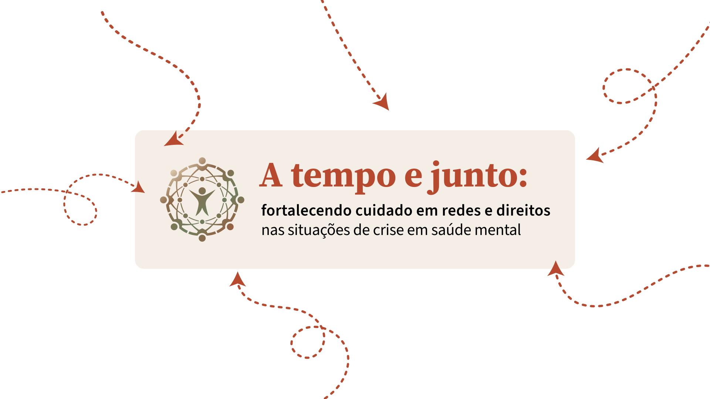
As muitas vidas de Antônia: da segregação à cidadania
Objetivos
Objetivo geral:
Compreender, a partir da história de Antônia e de suas crises, as diferenças entre a resposta hospitalar e a resposta do cuidado em liberdade no território, destacando o sentido da mudança de modelo e do atendimento integral e inventivo da Reforma Psiquiátrica brasileira.
Objetivo específicos:
Ao final desta aula, o participante deverá ser capaz de: (clicar no ícone, conforme imagem inicial).
- reconhecer que a palavra “crise” tem vários sentidos, mesmo dentro do mesmo serviço;
- identificar a noção orientadora de crise que será utilizada neste curso;
- compreender que a noção de crise se articula ao espaço que apareceu, ao tempo histórico e social e ao sujeito em específico;
- delinear um breve percurso da Reforma Psiquiátrica brasileira a partir do atendimento à crise e a importância estratégica do cuidado em situações de crise;
- apreender a invenção como característica primordial da Reforma Psiquiátrica brasileira;
- reconhecer a invenção que acontece no território que atua;
- entender a noção de corpo-território e sua articulação com o campo da saúde mental.

Clique e conheça a história de Antônia. Acesse a transcrição aqui.
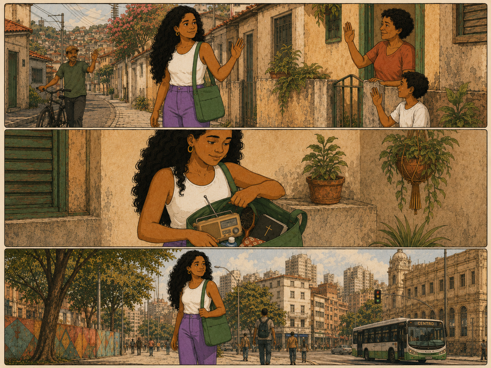
Antônia caminhava pela Rua do Quidé e proseava com um e outro que cruzava pelo caminho. Na mão, sempre uma sacolinha de loja com seu rádio, escova, uma bíblia e alguns cacarecos. Nessa manhã ela estava mais alinhada que de costume porque ia ao centro da cidade com Gislene.
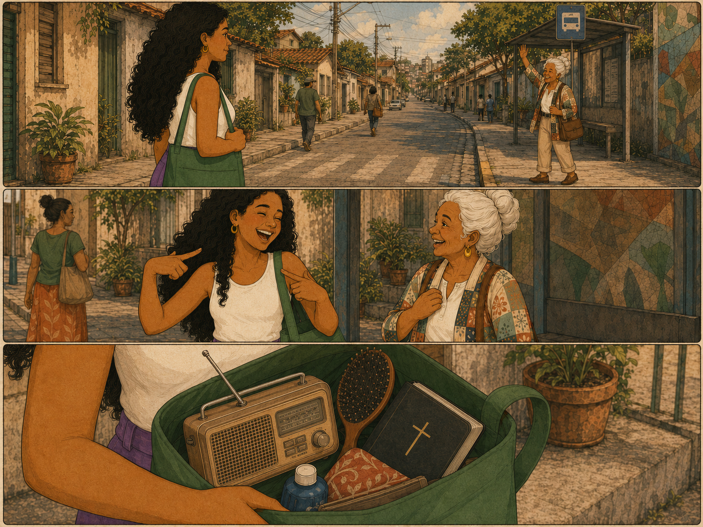
De longe, vê Gislene no ponto de ônibus e ouve ela falar com aquele vozeirão: “Ô Antônia, tu trouxeste o documento? Vamos embora que voltar com o sol quente vai me deixar mole”. Antônia ri alto e pergunta se ela tem cara de esquecida: “Louca pode ser, mas esquecida, não!”. E repete isso algumas vezes para uma outra que estava ali de figurante da cena. No radinho que está na sacola, o pastor divulga curso para casais em crise.
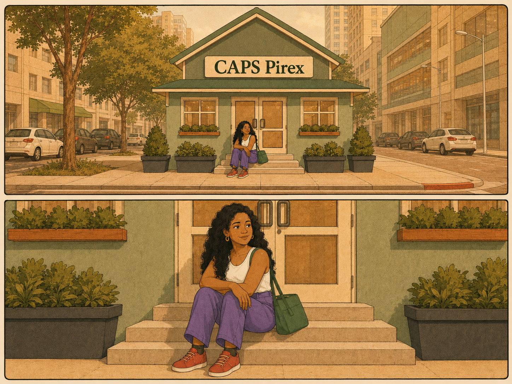
Ninguém daquela época se esquece de Antônia. É uma memória feita na base da convivência diária, entre choro, suor e alegria, entre ela e os trabalhadores e outros usuários do CAPS Pirex.
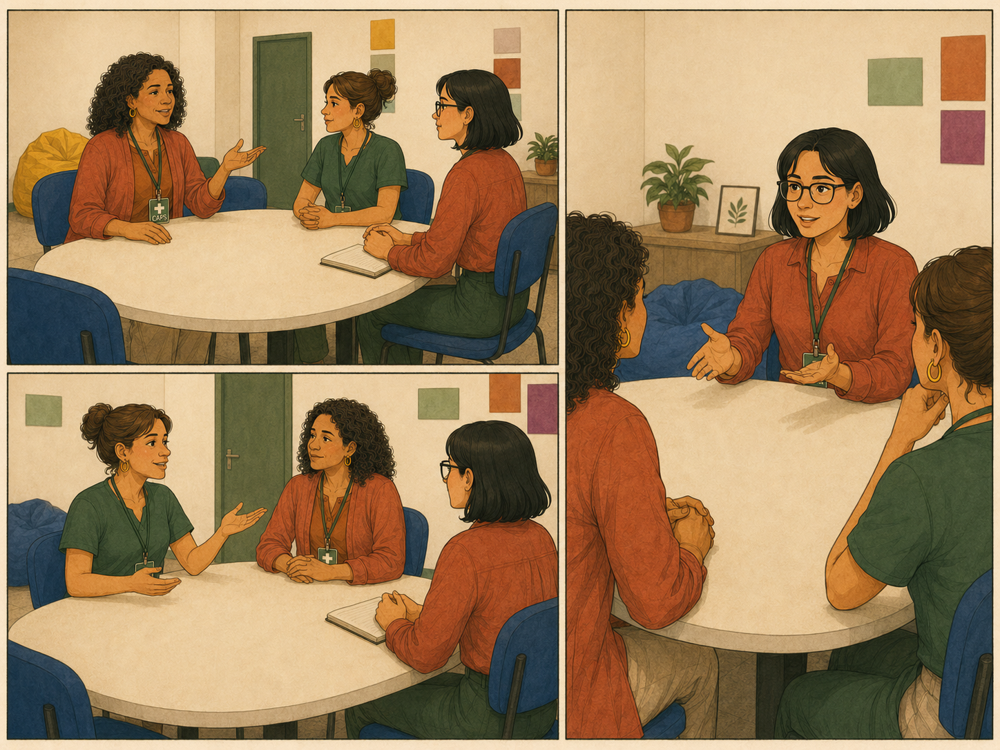
Os estagiários e os trabalhadores mais novos sempre se perguntavam por que Antônia continuava indo ao serviço se ela estava tão bem. Uma discussão sempre voltava à roda: “Ela vai ficar vindo só para almoçar?”. O “só para almoçar” era um jeito de dizer que talvez ela já não precisasse mais estar ali, ou que não cabia nos “critérios” de um serviço tão cheio de demandas.
Nessas horas, alguns profissionais mais antigos, com um meio sorriso e um certo ar de quem já viu muita coisa, retrucavam: “Só para almoçar? Então leia o relatório que veio do manicômio judiciário”. Era a forma às vezes irônica, às vezes terna, que os mais experientes encontravam para alertar os desavisados sobre as histórias das pessoas, para além do que se vê no imediato do contato com alguém.
Antônia era egressa do Manicômio Judiciário. No relatório, 30 páginas em que a alcunha “psicopata” era usada sem cerimônias junto a descrições de cenas violentas de suas crises de “hetero e autoagressividade”. Grande parte dos relatos registrados falava de agressões a profissionais de saúde.
Nessas horas, alguns profissionais mais antigos, com um meio sorriso e um certo ar de quem já viu muita coisa, retrucavam: “Só para almoçar? Então leia o relatório que veio do manicômio judiciário”. Era a forma às vezes irônica, às vezes terna, que os mais experientes encontravam para alertar os desavisados sobre as histórias das pessoas, para além do que se vê no imediato do contato com alguém.
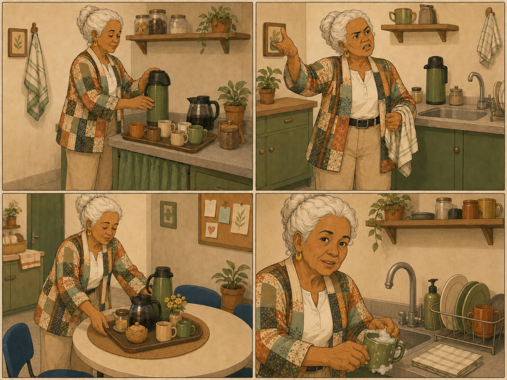
Gislene, copeira e cozinheira do serviço, uma das referências mais firmes de Antônia, se agita e dispara: “Já que vocês estão bem assim na vida, eu é que não convido mais ninguém para o caruru deste ano, viu? Aff, comida não se nega a ninguém!”. Não sabia ao certo se os meninos perguntavam por curiosidade ou desconfiança, mas, mulher vivida e sensível, aprendeu que com fome não tem discussão. Nunca tinha trabalhado em serviço de saúde antes e, no entanto, fez-se referência. Foi aprendendo no calor do cotidiano, afinando o gesto e a palavra, aprimorando o trabalho a partir da convivência com Antônia, uma relação que já foi bem mais turbulenta do que é hoje.
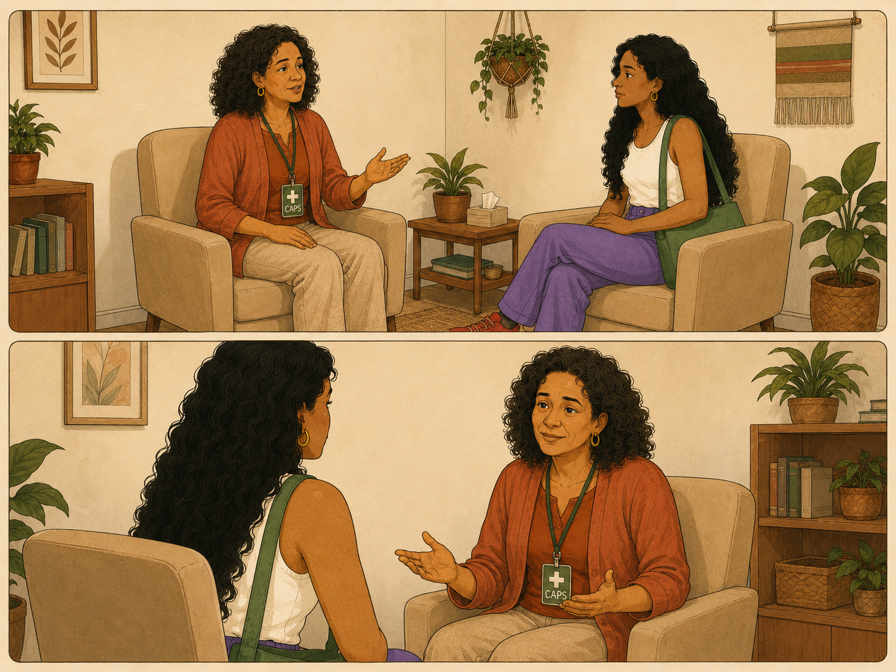
Quando Antônia chegou pela primeira vez, anos atrás, os profissionais que fizeram o acolhimento ficaram assustados com o calhamaço médico que chegou encaminhado pela instituição judiciária. Gislene estava lá.
No entanto, a equipe do recém-inaugurado CAPS II, ansiosa por fazer diferente, empenhou-se em não paralisar pelo medo e decidiu, sob alarde de muitos, reavaliar o diagnóstico, suspender o rótulo e o uso do termo “psicopata”, pelo menos até conhecer melhor quem era Antônia. Gislene uma vez anunciou: uma mulher preta, que veio lá do sul da Bahia, como eu.
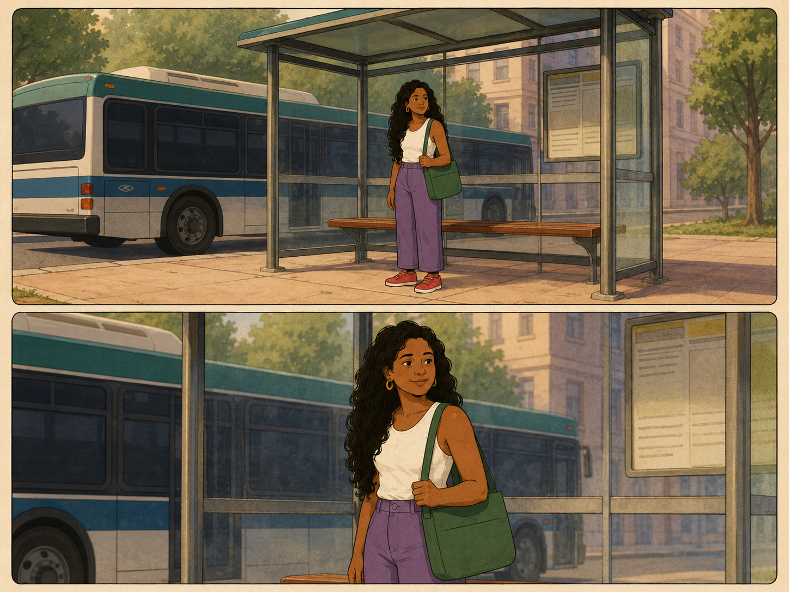
Algo havia se iniciado com a chegada de Antônia – um modo de cuidado tateante para conhecer a usuária, em contraste com um modelo bastante ambulatorial, preso a horários e agendas fixas que alguns profissionais tinham como o correto e mais organizado a se fazer, um modelo de atendimento. A aproximação entre equipe, família e usuária acontecia aos poucos, morna, como quem ainda mede a temperatura.
Um tempo depois de estar frequentando o CAPS, Antônia foi convidada para uma excursão, a fim de ver as luzes de Natal no parque.
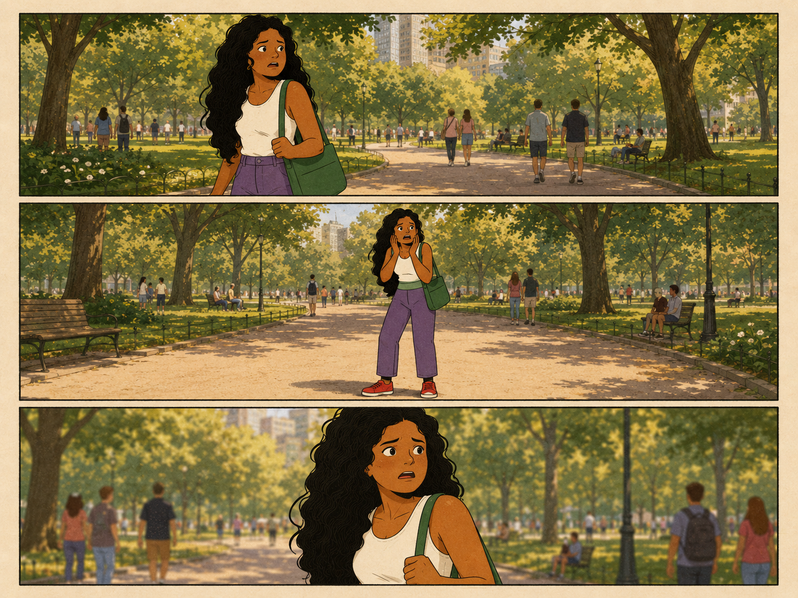
Durante o passeio, perdeu-se do grupo, sumiu no meio da multidão e das árvores. Foram horas de procura até que a encontraram, desorientada, e foi levada ao Hospital Municipal. Ficou quase dois meses na urgência da psiquiatria. Lá, batia nos profissionais, resistia às regras e, mais uma vez, foi reconhecida, ou marcada por sua agressividade.
Os enfermeiros do Hospital costumeiramente perguntavam aos profissionais do CAPS, em reunião de rede, como Antônia estava e diziam: “Tigrona, hein” – jargão da enfermagem para falar de pacientes que têm força física e psíquica e questionam ou não aceitam as ordens da instituição. Outro funcionário da Urgência disse que a equipe precisava ficar atenta para não dar “asa à cobra”, agora que finalmente viu quem era a “verdadeira Antônia”.
A equipe se dividiu sobre o que fazer depois daquela primeira crise. O medo circulava pelos corredores e crescia no olhar de alguns que diziam que Antônia talvez não fosse “perfil CAPS”, e que não havia jeito de cuidar daquele “tipo de crise” no serviço, era perigoso e irresponsável. Sonhavam com um serviço especializado, com fronteiras definidas e parâmetros de triagem que dessem finalmente segurança em um dia a dia instável. Esse efeito Bacamarte moderno em que se dita o que é e quem é o outro para se defender do risco e da surpresa.
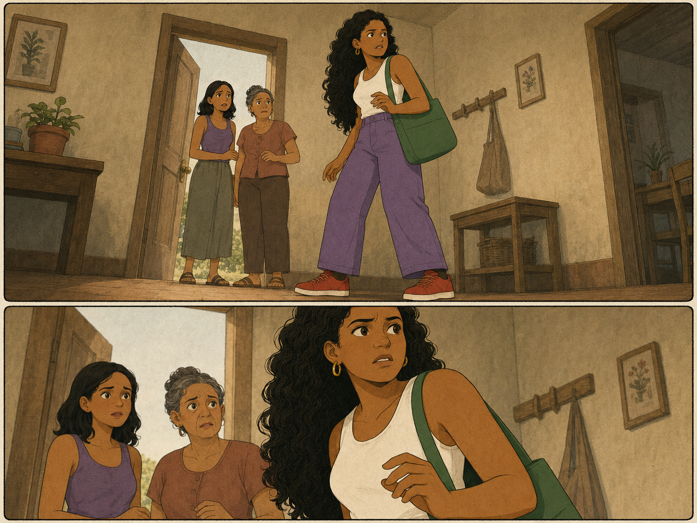
Por outro lado, outros defendiam que o hospital é mais violento que Antônia e que o lugar dela era em casa, com apoio, com gente por perto.
No meio de toda essa discussão interna, muitas vezes, Antônia voltava sua raiva contra as irmãs, que insistiam para que tomasse a medicação. Esse era um ponto sensível, quase ferida aberta.
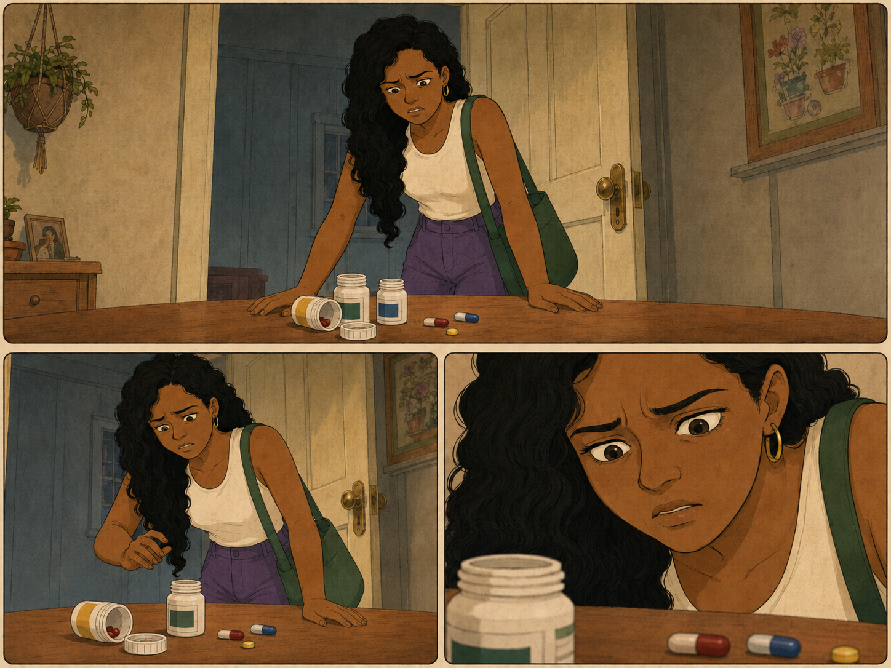
Contava, com voz firme e um misto de dor e revolta, que a mãe havia morrido anos antes por causa dos remédios psiquiátricos e de um tratamento mal feito em sua cidade natal.
Desde então, qualquer conversa sobre remédio vinha carregada de lembrança e desconfiança, como se cada comprimido trouxesse junto um pedaço daquela perda antiga.
A discussão chegou quente à supervisão. O supervisor ouviu os relatos e, depois de um breve silêncio, perguntou: “E o que aconteceu com Antônia? Ninguém percebeu que ela estava em dificuldade?”. ainda mais com o drama familiar instaurado.
Lá do fundo da sala, Gislene se remexeu na cadeira. O olhar do supervisor a alcançou, ela desviou por um instante, como quem sabe que entendeu antes dos outros o que estava se passando. Como quem não quer nada, ainda alfinetou a equipe perguntando como seria realizada a acolhida sem ser CAPS III, 24 horas, alfinetou a equipe perguntando como seria realizada a acolhida sem ser CAPS III, 24 horas, ainda mais com o drama familiar instaurado.
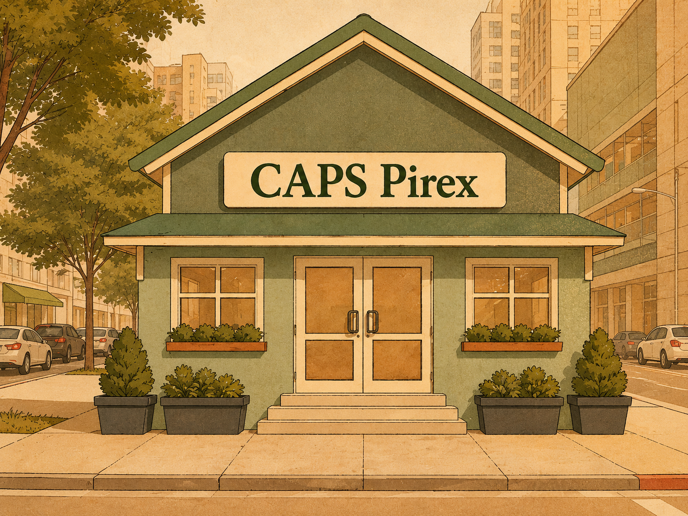
O supervisor não era contra tirá-la do hospital. A equipe sabia que ele tinha nas costas anos de experiência com situações de crise em liberdade, em que inventou jeitos e jeitos de acolher, mesmo quando não era muito viável institucionalmente. Puderam escolher o supervisor e foi justamente por causa de sua experiência em Santos que o chamaram. Ele não era contra tirá-la, mas queria preparar a equipe para verdadeiramente acolher uma situação dessas, em toda sua intensidade.
A jovem equipe sonhava em conseguir que a prefeitura transformasse o serviço em 24 horas, porque via que o trabalho intenso e delicado não adiantava muito quando uma crise chegava e não havia um lugar para o usuário ou a usuária passar a noite, conseguir acolhimento fora do ambiente de sua casa.
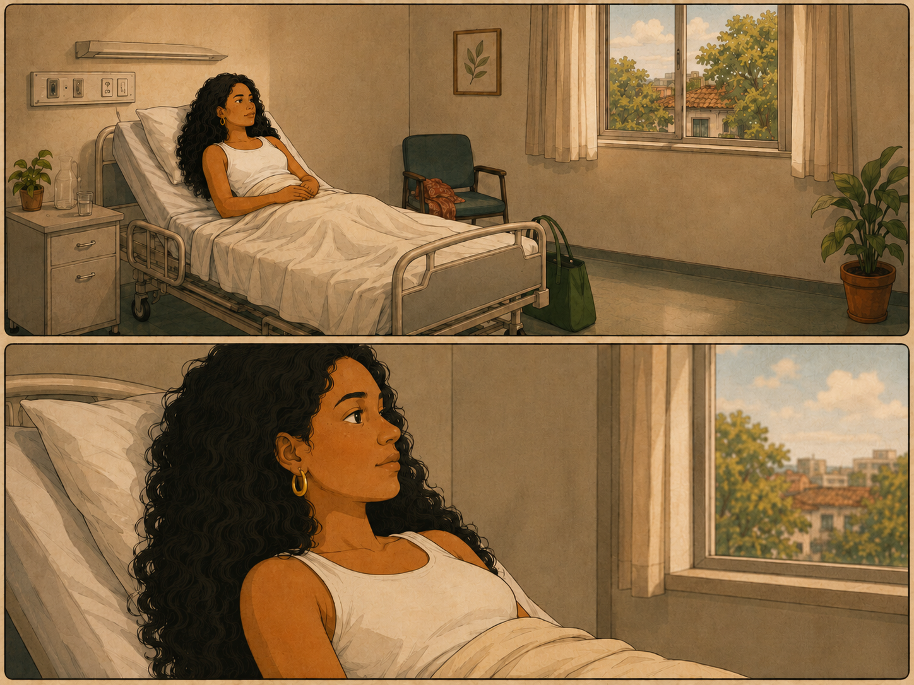
Não conseguiu transformar para 24 horas, mas ampliou o atendimento no dia a dia (de 8 para 12 horas), abriu inclusive aos sábados, inventou jeitos e fluxos com o CAPS III mais próximo e também acompanhamento no domicílio o mais próximo possível.
Enfim, o Hospital não autorizou a saída, nem a família se sentiu segura, mas quando, finalmente, Antônia foi liberada, estava extremamente sedada e, ao mesmo tempo, ainda brigona (mesmo que sem poder de ação).
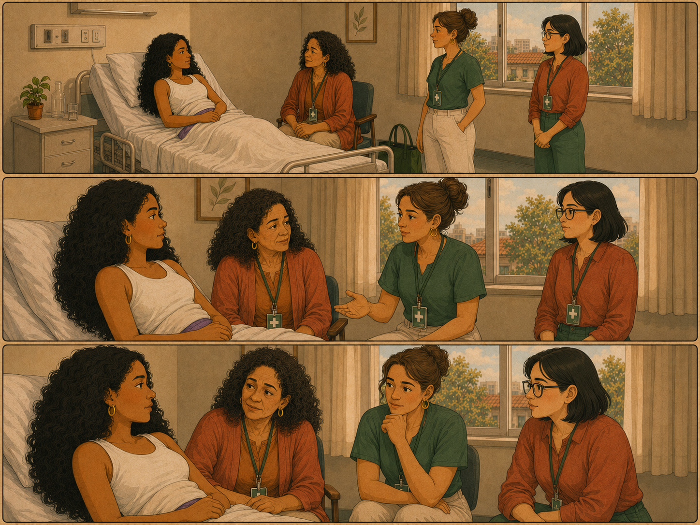
Durante a internação, a equipe se organizou para ir todos os dias na ala psiquiátrica. Isso irritou alguns profissionais da equipe hospitalar, mas fez com que houvesse o mínimo de continuidade no trabalho que fazia no território e que foi interrompido pela internação.
A equipe levava mudas de roupa quando necessário e ainda ajudava no banho e na comida. Organizou-se para levar a família à visita, e isso fez com que houvesse mais confiança das irmãs de Antônia no cuidado do CAPS, o que fez muita diferença na próxima situação enfrentada.
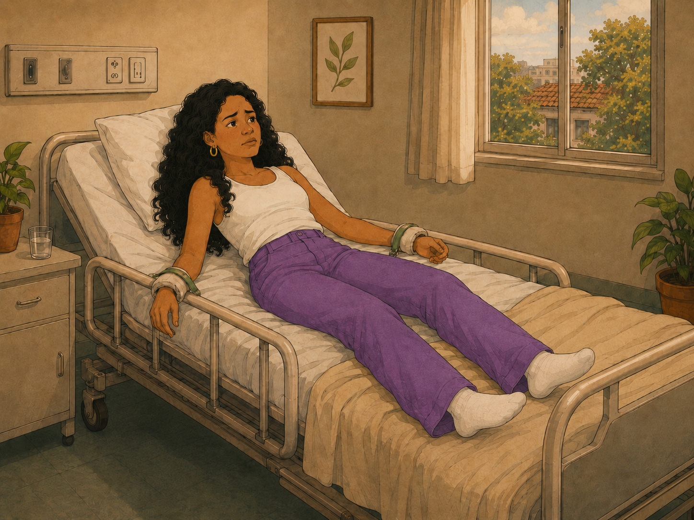
Gislene voltava triste das visitas. Antônia recebia a referência na base do xingamento e dizia que ela não prestava e botava veneno na comida. Mas não era nem por isso que a referência cogitou não ir mais ao hospital. Não aguentava ver a situação de Antônia, amarrada, e também a profissional não era bem tratada pela equipe do hospital, que sabia que ela não era da saúde. O gerente insistiu que ela continuasse e, em reunião de equipe, surgiu a ideia de que a médica fosse junto um dia ou outro, também como forma de emprestar poder.
A ida da médica possibilitou também a discussão da medicação conjuntamente. O hospital teve dificuldade e resistência de coordenar os médicos de plantão com a médica no CAPS, mas a insistência do CAPS gerou frutos importantes para a saída mais rápida da usuária.
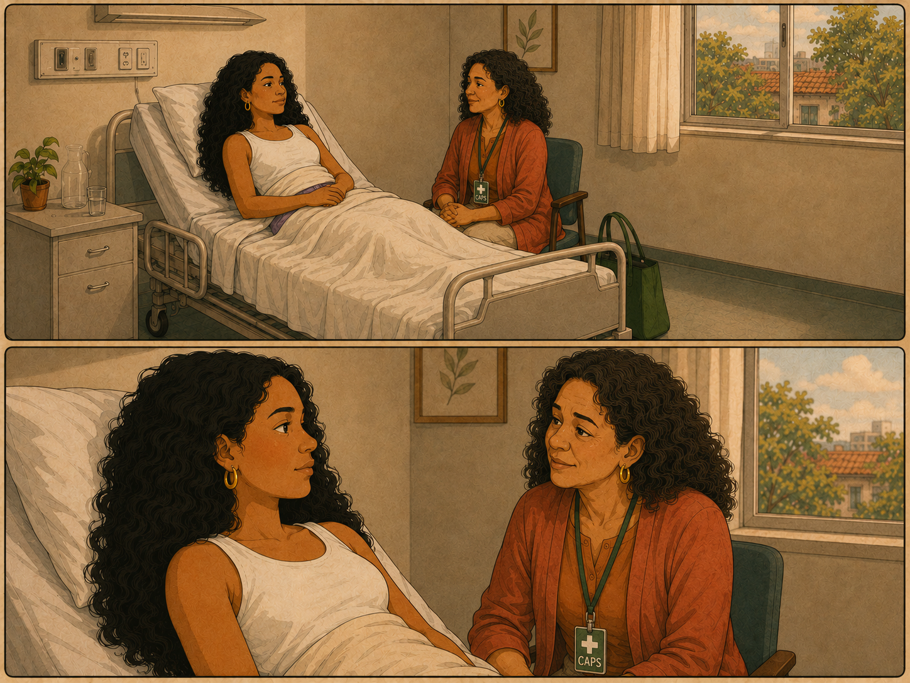
Para a tão sonhada saída, o CAPS cria um plano para que Antônia fique mais tempo no serviço e designa que o transporte tenha prioridade para pegá-la todo dia. Negocia uma provável acolhida do CAPS III do outro bairro, único CAPS III da cidade.
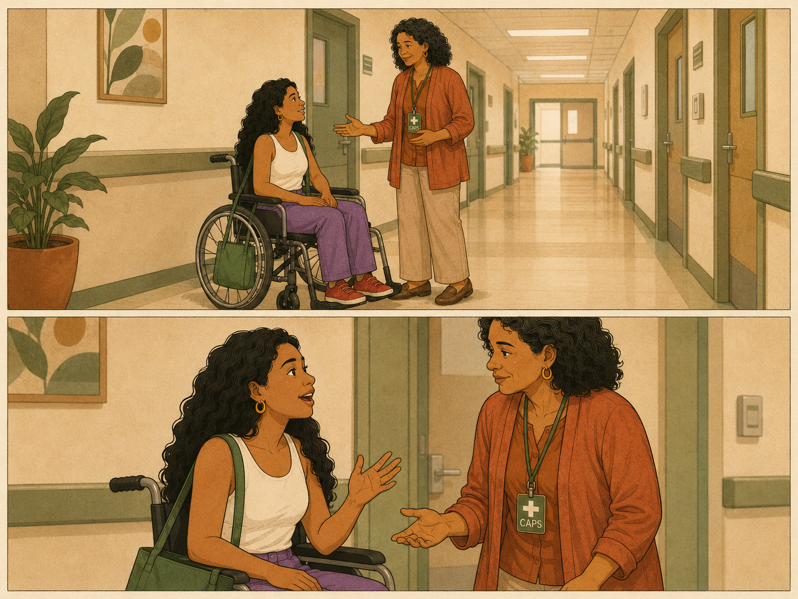
Para conseguir que o serviço 24h concorde, garante que um técnico do Pirex estará sempre com Antônia. Para isso, precisou convencer a supervisora de saúde do território a deixar o técnico de enfermagem fazer plantão noturno. Ela aceitou!
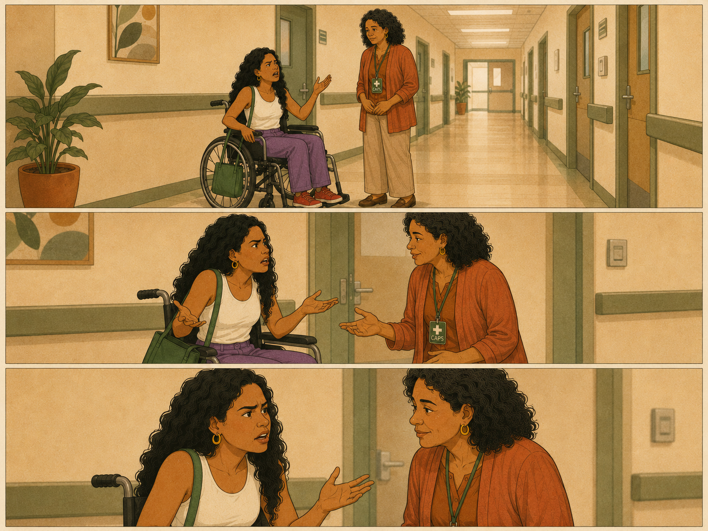
O cotidiano depois da saída ainda é difícil, Antônia fica irritada, tenta arranjar brigas, questiona os profissionais, fica de olho nos horários de entrada e saída, nas conversas do corredor, e bufa muito.
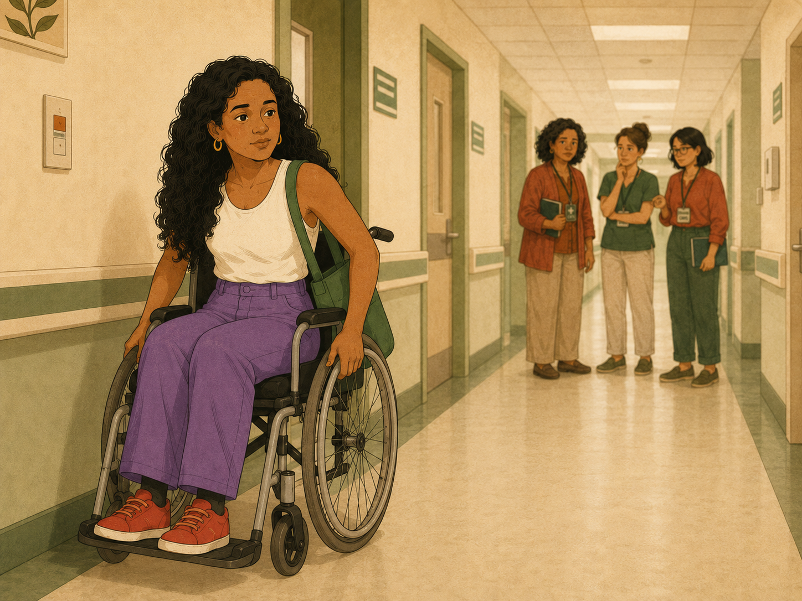
Os profissionais começam a ficar cansados das negociações quase ininterruptas sobre a saída para a rua e sobre as reclamações a respeito da equipe. Antônia se metia em tudo e não poupava críticas.
Em um desses dias, ela vai até a cozinha e xinga Gislene, que servia café para uma outra usuária. O CAPS todo ouve. Antônia costuma ficar indignada com a falta de hierarquia e regras do serviço, e não admite que o café seja dado para um usuário de novo: “Cada hora é uma regra aqui, pode ou não pode pegar mais café?”.
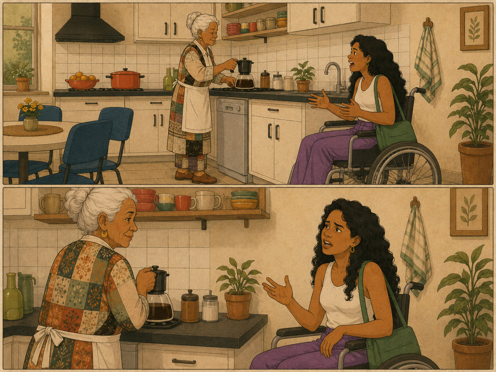
Antônia nem toma café, mas bufou mais uma vez e foi procurar o gerente no ritmo lento que a sedação da medicação permitia. Volta com ele pela mão e busca sua aprovação.
Gislene, por sua vez, ofereceu dois copos de café com bolo para cada um, indicando que se sentassem. Gislene passa, então, a falar que, para ela, Deus era a força da natureza em todas as coisas, e faz um discurso sobre problemas reais e problemas que a gente inventa e que Deus quer que nos concentremos naqueles que são reais.
Antônia começou concordando com a parte que ela fala de Deus, apesar de serem de religiões diferentes, adorava falar sobre Deus com Gislene, mas, mesmo assim, não gostou do resto e voltou a bufar.
A referência diz firme: “Sem crise, Antônia, vamos ver como a gente resolve”, e sugere que, se ela estava tão preocupada, podia aparecer pela cozinha logo antes do café da tarde para fazer mais uma garrafa e ficar responsável por garantir que todos possam pegar do café de maneira igual e ninguém ficar sem.

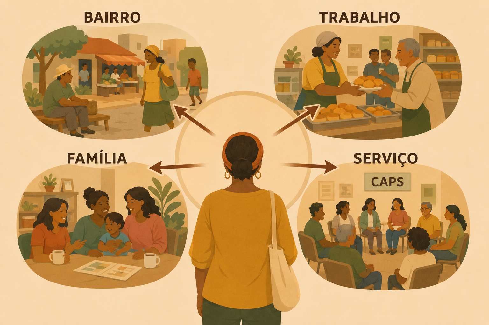
Uma história vivida entre uma pessoa e seu mundo. A crise não acontece “dentro” do indivíduo: ela ocorre também entre – entre pessoas, entre tempos, entre mundos em atrito. Por isso, cuidar da crise é cuidar junto do espaço relacional que se desorganiza e precisa ser reconstruído. Nesse espaço relacional, estão os profissionais da equipe e o serviço de saúde, e as pessoas e coisas que fazem parte da vida de cada um. Você se recorda que Antônia não aceitou Gislene no Hospital? É dessa relação que estamos falando, dessa reconstrução.
O que define uma crise, portanto, tem certas variações de acordo com o espaço de relações onde apareceu, dos laços que rompe, e também, é muito importante dizer, depende da resposta que damos a ela. Estudos de outros países mostram que, em pacientes negros, como Antônia, a contenção e o isolamento forçado como estratégias de atenção à crise são mais usadas, ou seja, o mesmo sinal que indica contenção para uns significa métodos menos invasivos e mais dialogados para outros. Quanto às respostas às violências sofridas, aos questionamentos, as alegrias e ousadias de Antônia eram entendidas e significadas como mais violentas por ser negra? Estudos de outros países mostram que há uma continuidade mais acentuada da exclusão e violência contra a população negra e indígena em certas práticas em saúde: HEYES, K. et al. A co-produced review of the experiences of Black male detention under mental health legislation: Challenging discrimination in psychiatry using The Silences Framework. PLOS Mental Health, v. 2, n. 4, 2025. DOI: https://doi.org/10.1371/journal.pmen.0000041.
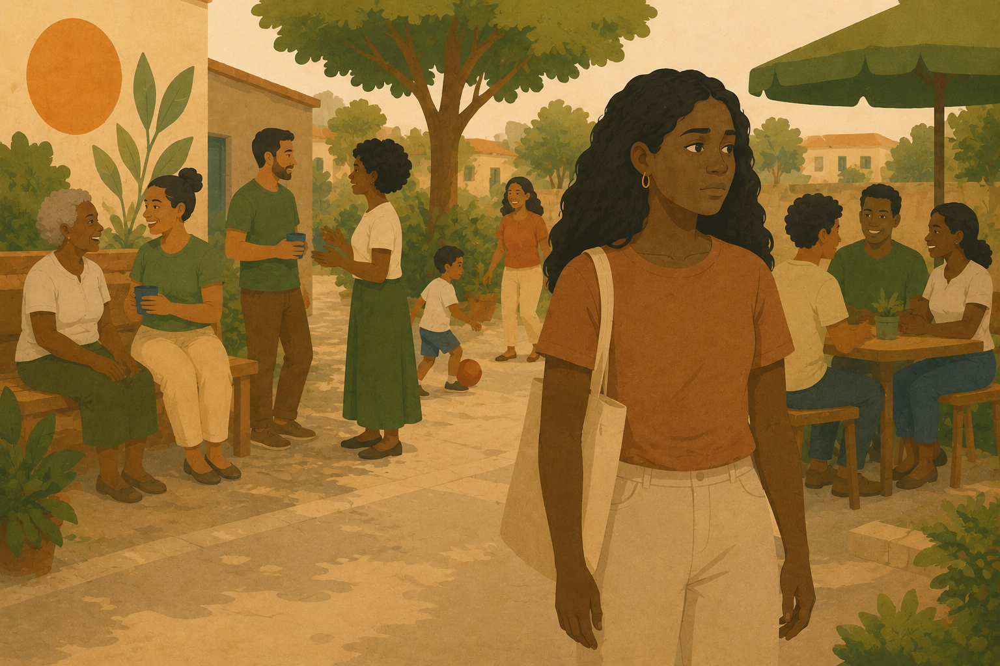
Na prática, isso quer dizer que precisamos saber do que mais, além do diagnóstico, é constituída uma crise. Que histórias são contadas ali, questionar quem define a história contada, e isso exige ver, escutar e intervir:
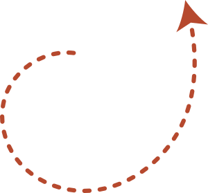
- Quando uma mulher chega ao CAPS gritando, o que ela quer dizer ainda que dessa forma?
- Quando um jovem ameaça se matar, o que se rompeu entre ele e o mundo?
- Quando uma família traz o parente “fora de si”, o que também desmorona dentro daquela casa?

- A equipe em que você trabalha consegue discutir o caso para além do diagnóstico e das necessidades imediatas?
- Consegue pensar sobre as perguntas que uma determinada crise coloca? A questão envolve a rede social, a família, o amor, o trabalho ou a moradia?
- Ou ainda: as respostas dadas a pacientes racializados (indígenas ou negros) foram diferentes em determinada situação?
Quando uma crise acontece, abrem-se perguntas. E é justamente a compreensão e a comunicação que ficam ameaçadas em situações como essas, seja como efeito, seja como causa. Ana Marta Lobosque Intelectual, psiquiatra e militante, Ana Marta Lobosque atuou e atua na transformação da rede em Belo Horizonte, mas não só. Seus textos e livros são fundamentais para pensar a crise e o conhecimento construído pelo processo de Reforma Psiquiátrica brasileiro. coloca que “se encontram perturbadas as possibilidades de pensar, de falar e de agir de forma compreensível, ou seja, as formas com que o sujeito pode se inserir numa cadeia de significações partilhadas socialmente”. A pessoa acaba ficando de fora, fora de si e fora daquilo que o outro compreende e consegue ler. Porque o que a gente não entende, a gente acaba excluindo, deixando de ouvir, deixando de ver.
O que acontece quando chegamos ao limite da compreensão, sem saber o que fazer com aquela situação? O que acontece quando chegamos ao limite do diálogo possível? Temos maneiras diferentes de lidar com o limite daquilo que não se entende, que surge no momento da crise. Naquele momento que nos perguntamos: Mas o que aconteceu? O que está acontecendo? Há aqueles que vão se sentar pacientemente e ouvir, há aqueles que vão usar pincel e tinta, há aqueles que vão dizer que precisa internar, há aqueles que estão cansados e não estão em condições de lidar.

Para cuidar da pessoa em crise, então, é preciso ver, escutar e intervir não apenas o grito, mas também o contexto que produziu o grito, ou seja, as condições gerais daquela pessoa que podem impedir ou tornar ineficaz o próprio cuidado. É preciso ver o corpo biológico, como fez a psiquiatria, mas conectá-lo ao corpo social, ao território e ao tempo em que se vive.

As histórias têm pano de fundo e cada crise é um acontecimento singular vivido em um contexto comunitário, familiar e social. Às vezes, a crise surge como um redemoinho interno, em que a pessoa se recolhe em torno de si, num mergulho profundo que a isola do mundo. Outras vezes, ela aparece como uma explosão de sensações e movimentos, uma tentativa de se conectar com tudo e não se vincular a nada. O racismo, a pobreza, a solidão, a violência de gênero, o desemprego, a falta de moradia, as guerras e as migrações atravessam a cena e alimentam o sofrimento. Condições coletivas que interferem na visão, escuta e intervenção que pretendemos. Sendo assim, talvez não faça sentido mirar em uma vida sem sintomas, mas em uma vida em que seja restaurada a capacidade mínima de compreensão entre essa pessoa e as outras de seu mundo. Na crise, é preciso restaurar a capacidade de comunicação entre as partes. Como foi feito com Gislene e Antônia, e Antônia e a família. Por isso o trabalho do CAPS acontecia mesmo quando Antônia não estava no CAPS.
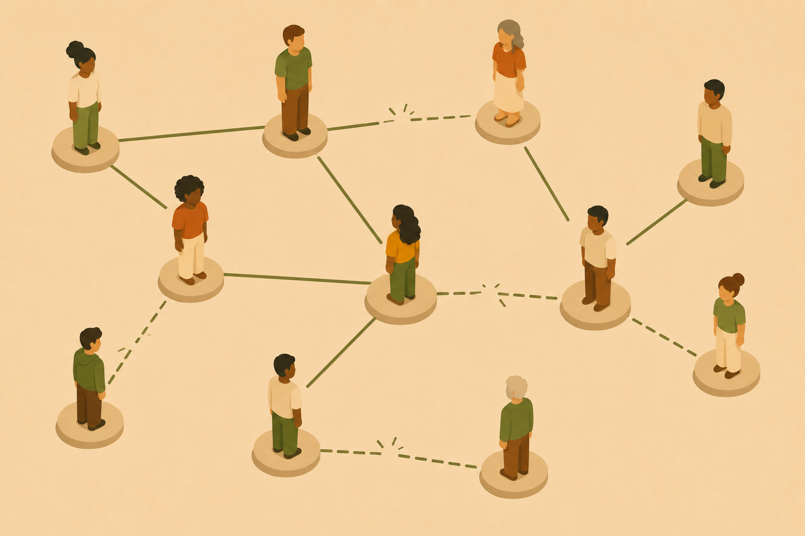
Diante do que foi apresentado até aqui, este curso adota a compreensão de que a crise não é um evento isolado, mas uma situação vivida por todos os elementos de um determinado ecossistema, marcada pela ruptura ou fragilização da rede de vínculos que sustenta o viver. Essa ruptura gera sofrimento, desorganiza o cotidiano, compromete a autonomia e prejudica a capacidade de comunicação de uma pessoa ou de um grupo. A crise está sempre situada em um território e em um momento específico da trajetória de vida, configurando-se como um momento de virada: uma condição de vulnerabilidade que pode ser percebida como fraqueza, mas que também pode se apresentar como uma oportunidade de reinvenção.
Escute o áudio a seguir e reflita um pouco mais sobre a compreensão do conceito de crise a partir da história de Antônia. Acesse a transcrição aqui.

E de onde vêm essas ideias sobre a crise?
As reformas psiquiátricas do século XX, que aconteceram em diversos países pelo mundo, criticaram o modelo tradicional da psiquiatria: modelo que acabava criando uma outra doença, a da instituição, em vez de cuidar da questão da doença mental. Muitas dessas críticas tiveram como base as semelhanças do tratamento psiquiátrico tradicional com os campos de concentração nazista, estabelecidos na Segunda Guerra Mundial pelo regime da Alemanha fascista. As imagens são semelhantes mesmo e não podemos nos esquecer de que os primeiros a serem mortos, por abandono ou por uma política direta de extermínio, foram os loucos e deficientes.
Clique nas imagens a seguir para acompanhar como foi o movimento no Brasil:
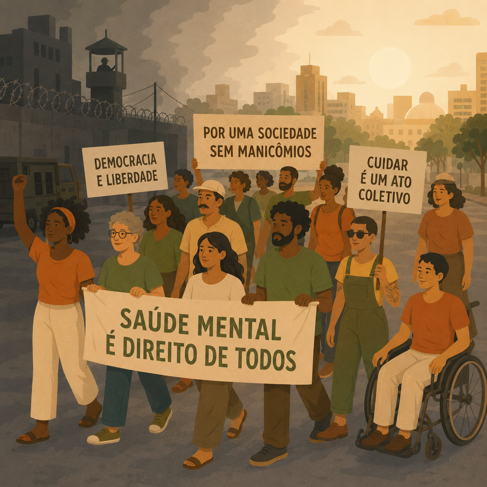
Anos 70 e 80
Ditadura e nascimento do movimento no Brasil
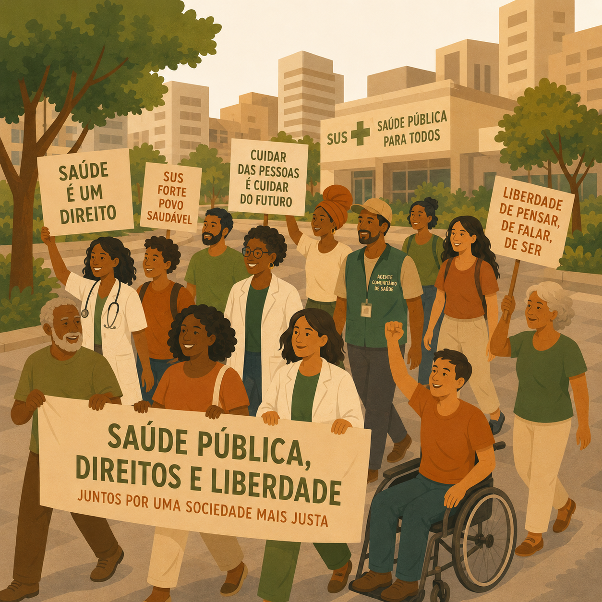
Década de 1980
Redemocratização, luta antimanicomial e saúde na CF88
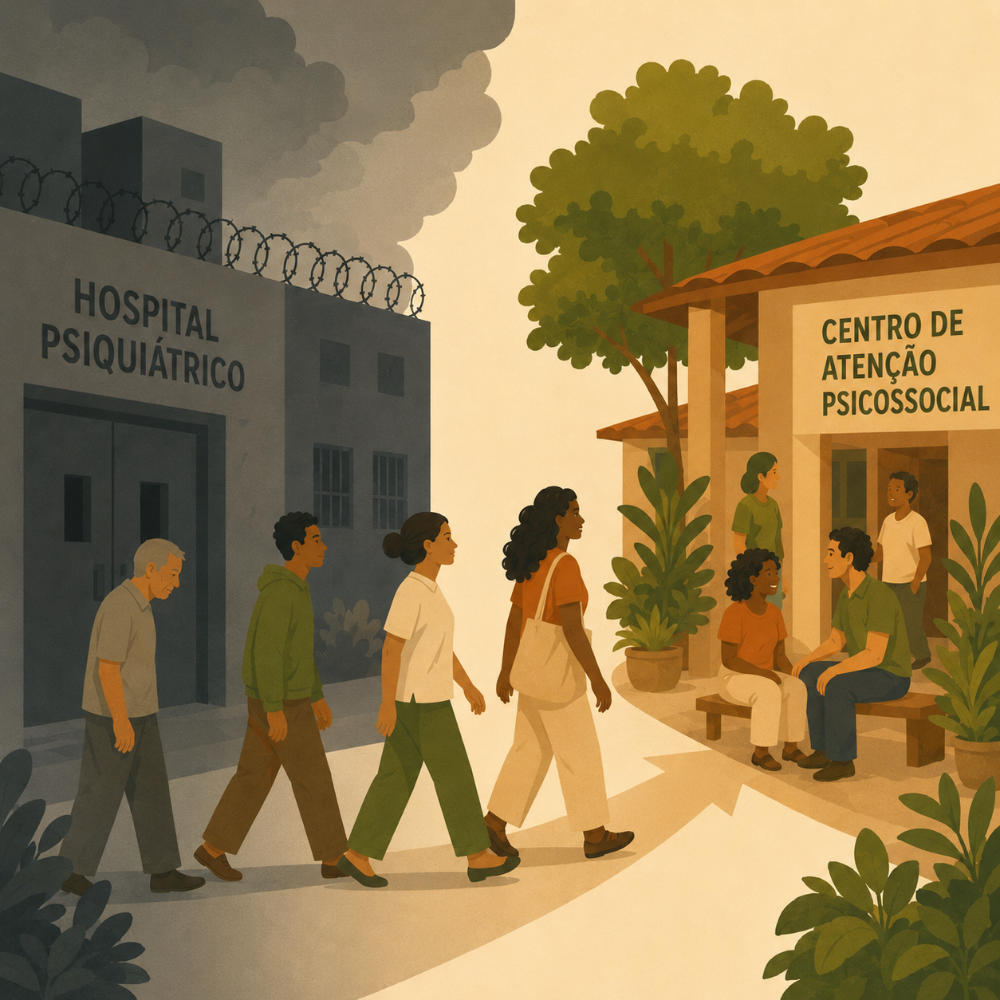
Nos anos 1980 e 1990
Marcos legais e experiências estruturantes do processo de Reforma Psiquiátrica brasileira
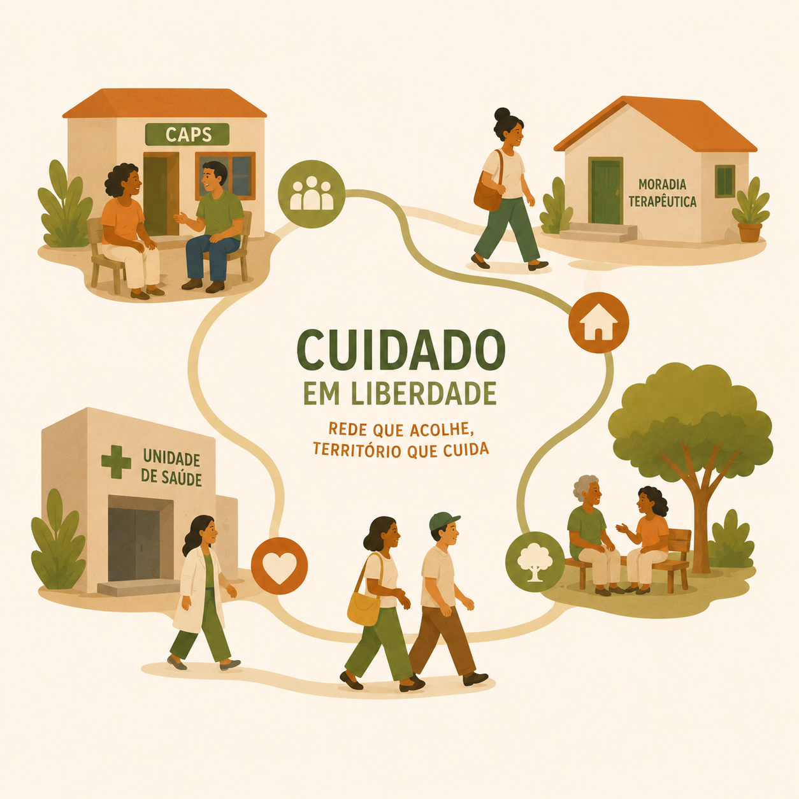
Nos anos 2000
Marcos de sustentação institucional às proposições da política de saúde mental no Brasil
A política de fechamento de leitos em Hospitais Psiquiátricos diminuiu em mais de 50% (Brasil, 2025) o número de leitos desde então – leitos SUS de internação psiquiátrica em hospitais psiquiátricos especializados (muitos de grande porte), com redução, descredenciamento e fechamento gradual de parte desses serviços –, o que também contribuiu para complexificar a demanda nos pontos de atenção do território. Em paralelo, a política passou a intervir nas questões de moradia e renda por meio dos Serviços Residenciais Terapêuticos (SRT) (vinculados ao CAPS) e do “Programa de Volta para Casa”, além de fomentar a implementação de CAPS III (24 horas) e CAPS III Álcool e Drogas.
Leitura pública do Manifesto por um usuário e/ou a inserção de link para o texto:
Manifesto de Bauru
https://site.cfp.org.br/wp-content/uploads/2017/05/manifesto-de-bauru.pdf
Carta de Bauru – 30 anos
https://site.cfp.org.br/wp-content/uploads/2017/12/CARTA-DE-BAURU-30-ANOS.pdf
Websérie produzida pela Fiocruz Brasília. Neste episódio, conheça Rosalina, sobrevivente do horror psiquiátrico de Barbacena, enquanto ela mostra sua nova vida nas “casinhas”, disponível em:
https://www.youtube.com/watch?v=MKoVZCbgKh0&list=PL95LdhfDEY15lM0-PU2gxgWCv9h-x5QQq&index=4.
Para saber mais sobre o processo de reforma psiquiátrica, acesse o material “Desinstitucionalização: da saída do manicômio à vida na cidade: estratégias de gestão e de cuidado”, do Desinstitute, disponível em:
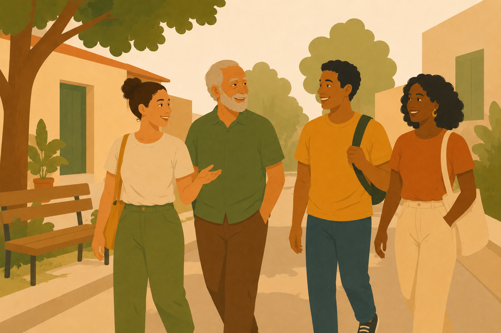
Os CAPS foram sendo implementados e, gradualmente, complexificados. O trabalho territorial ganha presença com a ampliação da cobertura da Atenção Primária/ESF, mas isso traz novos desafios legais, culturais e políticos: financiamento e continuidade das equipes; alta rotatividade; judicialização e pressões por internação; estigma e medicalização; fragilidade da articulação intersetorial (assistência social, habitação, justiça, educação); e tensões no território (violências, pobreza, racismo, desigualdades) que atravessam o cuidado.
Nesse processo, surgem dispositivos e experiências que ampliam a rede: as Unidades de Acolhimento (UAs) – moradia temporária e cuidado 24h para pessoas com necessidades relacionadas a álcool e outras drogas, articuladas ao CAPS ad; O que são UAs? As Unidades de Acolhimento (UAs) fazem parte da Rede de Atenção Psicossocial (RAPS) no âmbito do Sistema Único de Saúde (SUS). São residências temporárias que oferecem moradia e suporte continuado a pessoas em situação de vulnerabilidade social que estão em acompanhamento pelos CAPS ad e CAPS IJ. Essas unidades funcionam 24 horas por dia, incluindo finais de semana e feriados, e oferecem acolhimento por até seis meses, baseado em um Projeto Terapêutico Singular construído com cada pessoa e o CAPS de referência. Ver o verbete Hospitalidade na caixa de ferramentas do Módulo 2. crescem iniciativas de economia solidária, trabalho e renda; e programas/experimentações em moradia. Também se fortalecem debates sobre raça e gênero e, com eles, a pergunta central sobre como construir uma rede efetivamente substitutiva (não apenas “menos hospitalar”, mas mais protetiva, territorial e garantidora de direitos).
Nesse cenário, o momento limite da crise torna-se um ponto crítico: mesmo quando a rede busca reduzir a entrada no hospital psiquiátrico, é frequentemente nesse ápice que aumentam respostas restritivas/coercitivas, inclusive em serviços substitutivos, como apontam pesquisas na área (Coutinho, 2022; Dassoler, 2020; Costa, 2006; Jardim, 2014; Ferigato; Campos; Ballarin, 2007). Estratégias restritivas/coercitivas aqui incluem, por exemplo, isolamento/retirada de liberdade, contenção física e mecânica, sedação como controle comportamental, uso de força/polícia, ou intervenções sem consentimento, quando usadas como primeira resposta e não como exceção justificada.
A pergunta sobre como construir um cuidado em liberdade no cotidiano está muito ligada ao momento ápice da crise, em que se questionam as capacidades da pessoa sobre si mesma. A velha pergunta que ouvimos – “tem risco para si ou para os outros?” – é a marcação dessa questão. A crise historicamente é aquilo que afirma uma doença, o sinal mais claro de que ali há algo, ao mesmo tempo afirma o poder que temos sobre o doente (Foucault, 2022), pois estabelece que alguém precisa dar conta, e quando os direitos como cidadão são questionados, suspensos ou retirados. A medicina e os saberes psi (um conjunto de saberes e práticas sobre o sofrimento psíquico), em suas facetas mais coercitivas e menos cuidadoras, aqui ganham força. Portanto, estar a tempo na crise é taticamente importante para agir de forma a não repetir exclusões e suspensão de direitos.
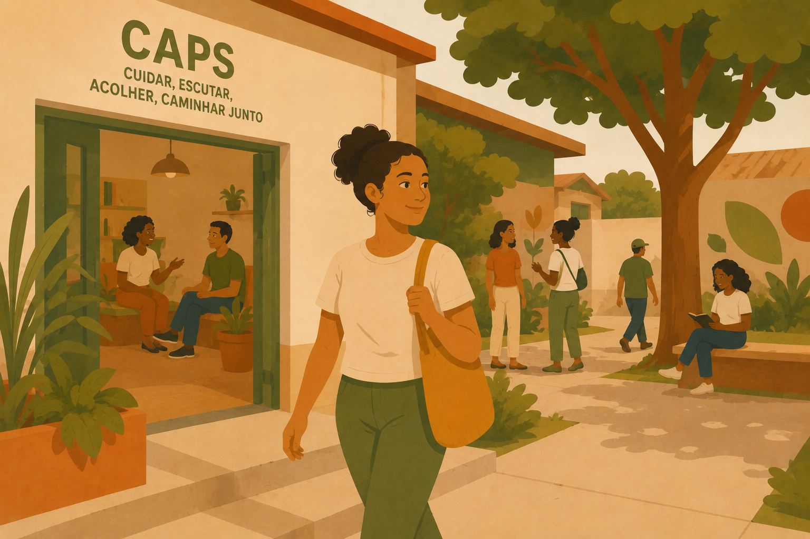
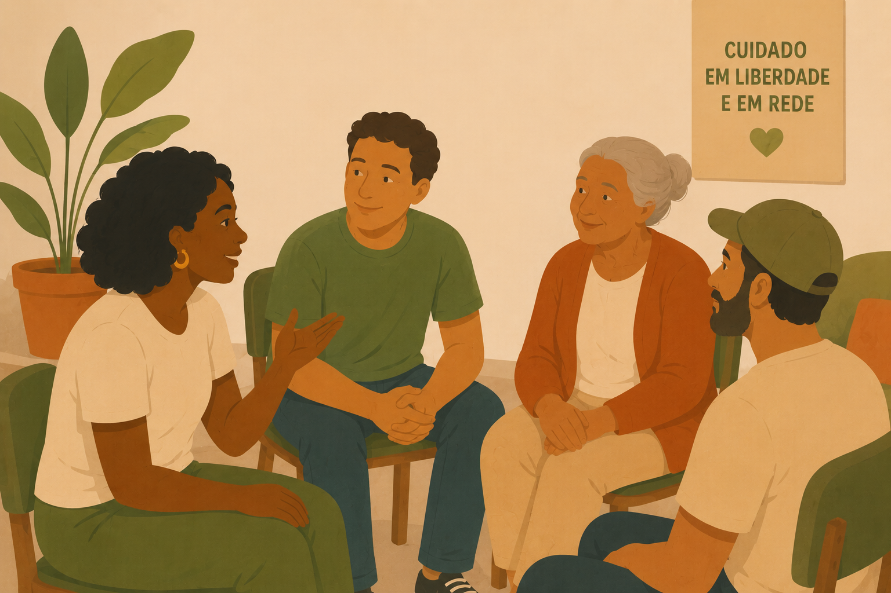
A reforma é um processo social complexo, como foi possível ver, e se materializa no cotidiano, nas formas de acolher, registrar, decidir, limitar danos e pactuar saídas, nas nossas ações práticas. É aí que a disputa política se materializa, entre o impulso de controle e o gesto de liberdade, e pode avançar: menos captura e mais autonomia; menos opacidade (falta de transparência nas decisões e registros) e mais controle social; menos estrada reta e mais caminhos possíveis ativados.
Assim, compreender a crise como acontecimento ético, ou seja, um evento que reverbera nas equipes e questiona seus valores, prioridades e modos de decisão no cotidiano, e relacional, que inclua, mas seja maior do que os diagnósticos específicos das categorias profissionais, exige enxergar o cuidado como processo coletivo, e não ato isolado e único.
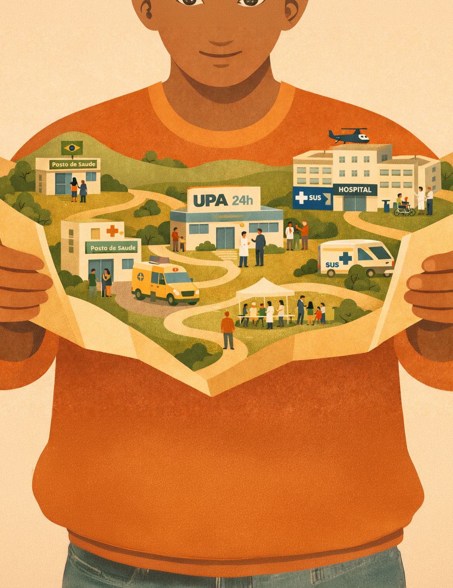
A pergunta que se impõe, ao pensar o enquadre de maneira mais coletiva é: de que modo a atenção à crise está sistematizada na rede em que atuamos? Como definimos o que é uma crise em determinada rede, ou seja, o que julgamos que é de interesse da saúde mental e deve ser tratado? Quantos serviços estão dispostos à crise? Como a rede se organiza ou não?
Se, como lembram Políbio Campos (2014) e Marcelo Kimati (2022), rede é movimento e não estrutura, acontecimento e não diagrama (um desenho fixo que simplifica a rede no papel), cabe-nos sustentá-la viva! O cuidado se faz em rede, com responsabilidade sanitária, com prontidão para não perder o passo e com companhia para não perder o rumo. Rede não é um conjunto de serviços dispostos em fluxograma (uma sequência “reta” de encaminhamentos, como se o cuidado fosse sempre igual), mas um tecido vivo que se acende no acontecimento: quem acolhe e sustenta, quem abriga e oferece previsibilidade, quem garante passagem e direitos. Chegar cedo, permanecer o necessário, decidir em comum para que o sofrimento não se feche em destino, mas se abra em travessia. Essa rede, quando viva, traduz o trabalho realizado em um percurso singular de cuidado, de costura dos laços sociais, rompidos pela institucionalização, pelas condições gerais da pessoa ou por uma crise.
Marcelo Kimati (2022) distingue três formas de rede observadas no Brasil, chamando de integrada e substitutiva a que melhor traduz o espírito da reforma. O desafio, diz ele, é transformar a regulação em corresponsabilidade. Essa divisão é extremamente pertinente ao pensarmos o atendimento à crise. Assim se configuram os modelos de rede:
Clique nos cards para conhecer as definições de modelo de rede.
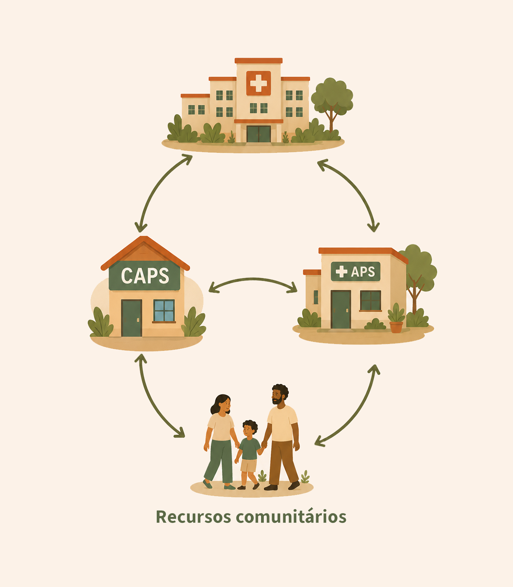
Centralizada e articulada
Existe um polo referencial para a crise (ex.: emergência/serviço de referência), comunica-se com CAPS/APS, aciona recursos comunitários e organiza idas e voltas (entrada, estabilização, devolução com plano e seguimento).
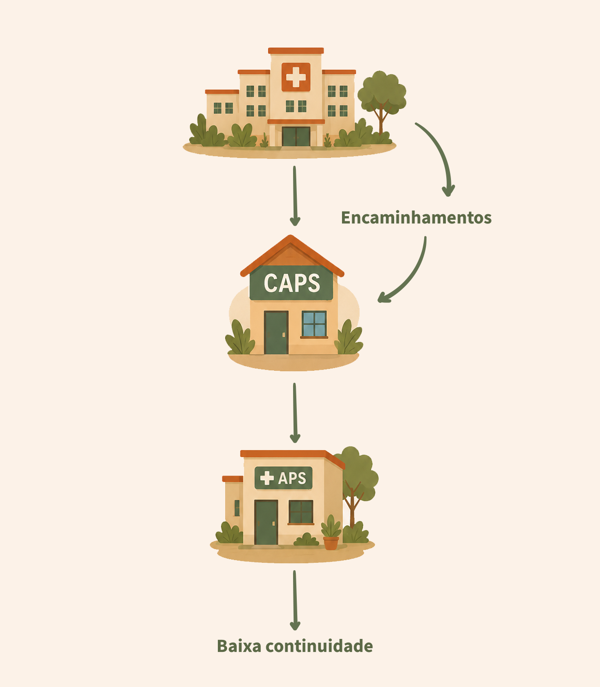
Centralizada e desarticulada
A crise também fica “presa” a um polo, porém com baixa conexão com a RAPS: encaminhamentos unilaterais, pouca continuidade e tendência ao circuito “crise = hospital”, com repetição de portas de entrada e saídas frágeis.
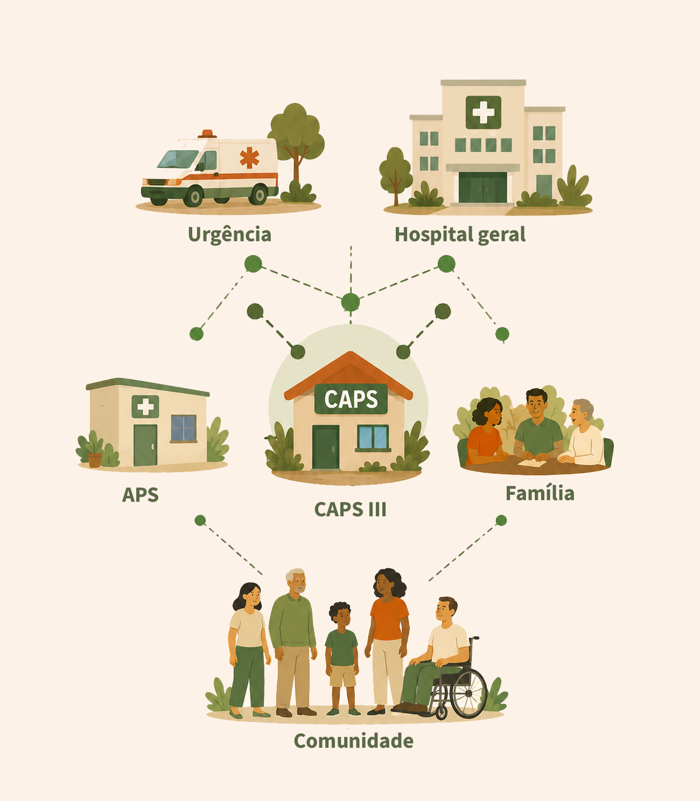
Integrada e substitutiva
(modelo ideal)
Crise é acolhida em dispositivos territoriais, especialmente CAPS III, quando disponível, com apoio da urgência e do hospital geral quando necessário, mas sem recolocar o hospital como centro. A rede opera como tecido vivo de decisões compartilhadas, priorizando o cuidado em liberdade e a continuidade do percurso singular.
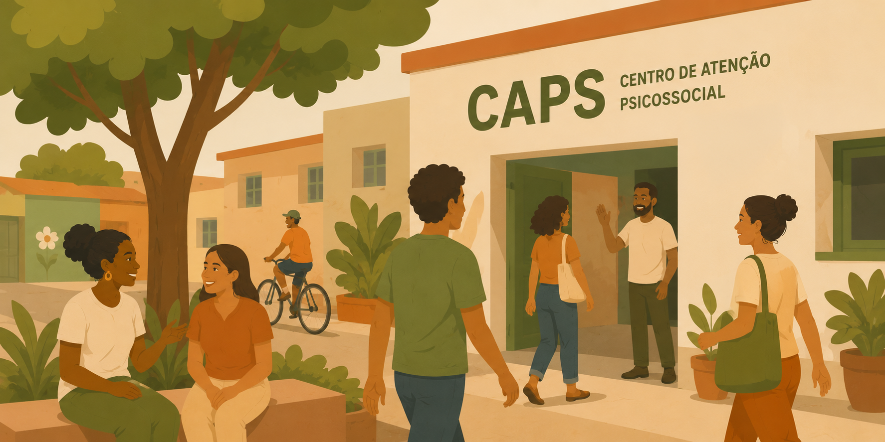
A regulação ainda opera sob lógica hospitalocêntrica: “crise = hospital”. A crise é responsabilidade do território, e a internação deve ser exceção. Portanto, a regulação deve garantir cuidado em liberdade, com vínculo e corresponsabilidade.
Os coordenadores de Saúde Mental atuaram e pensaram sobre a questão da rede em saúde mental. No começo da Reforma Psiquiátrica brasileira pelo Estado, Schechtman, Sávio e outros (1995), atuantes na coordenação de saúde mental do Ministério da Saúde, apontavam que a assistência psiquiátrica era de má qualidade porque seguia aprisionada à ideia do hospital como centro da rede. A crise, então, era sempre vista como perigo, e o tratamento como contenção. O hospital, símbolo da ordem, era também o lugar da exclusão. A reforma psiquiátrica, que emergiu nas décadas de 1980 e 1990, foi, antes de tudo, uma reação ética a essa forma de lidar com o sofrimento.
Clique nos nomes e saiba mais sobre o pensamento de alguns coordenadores de saúde mental:
Delgado
Kinoshita
O presente histórico brasileiro recoloca essas lições em disputa. Depois de décadas de avanço da reforma, vivemos um período de contração, seguido agora por um esforço de reconstrução. A rede, mais uma vez, é chamada a provar sua vitalidade. É preciso reinventar a invenção cotidiana, as formas de vínculo, recompor equipes, resgatar a formação humanista e, sobretudo, devolver à crise o seu sentido transformador, em um cenário político-social diferente do período da redemocratização. Para isso, é necessária também a articulação com movimentos sociais e espaços de controle social para interferir concretamente nas políticas, ou seja, nas condições gerais e, portanto, no poder local.
A atenção à crise em rede, por conseguinte, não é apenas uma metodologia de trabalho, mas uma posição. Ela implica reconhecer que o sofrimento é parte da vida comum e que o cuidado se constrói na trama de relações que sustentam a existência. Cuidar da crise é cuidar da capacidade humana de se conectar, de recomeçar e ter esperança.
Essas são algumas questões que você pode levar para refletir com sua equipe de trabalho. Ao respondê-las, você pode ter um melhor entendimento da rede em que atua, assim como das práticas de cuidado adotadas.
- Que formas de rede existem hoje no território em que você atua? Elas são vivas ou burocráticas?
- Como o seu serviço se prepara para acolher uma crise?
- Quais atores comunitários – escolas, igrejas, coletivos, vizinhos, lanchonete, coletivos – poderiam participar mais ativamente da rede de cuidado?
- Que práticas institucionais ainda carregam a lógica manicomial, mesmo dentro de uma rede psicossocial?
- Que pequenas ações cotidianas poderiam tornar a rede mais viva e solidária diante do sofrimento psíquico?
Escute o áudio a seguir sobre as transformações em Santos que marcaram um novo paradigma na saúde pública Antônia. Acesse a transcrição aqui.
Veja o vídeo sobre a intervenção aqui: https://www.youtube.com/watch?v=7J192djiUvg. Texto de David Capistrano Filho sobre a intervenção:
- Quando os muros de manicômios começaram a ruir | Outras Palavras
- Sanitarista David Capistrano Filho recebe homenagem na Fiocruz
- Marco da luta antimanicomial no país, intervenção da Casa de Saúde Anchieta, em Santos, completa 35 anos | Notícia | Prefeitura de Santos
Paulo Amarante faz um breve histórico sobre as Conferências de Saúde Mental, disponível em:
https://outraspalavras.net/outrasaude/saude-mental-para-uma-historia-das-conferencias/ .
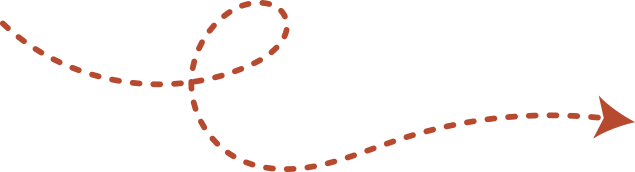
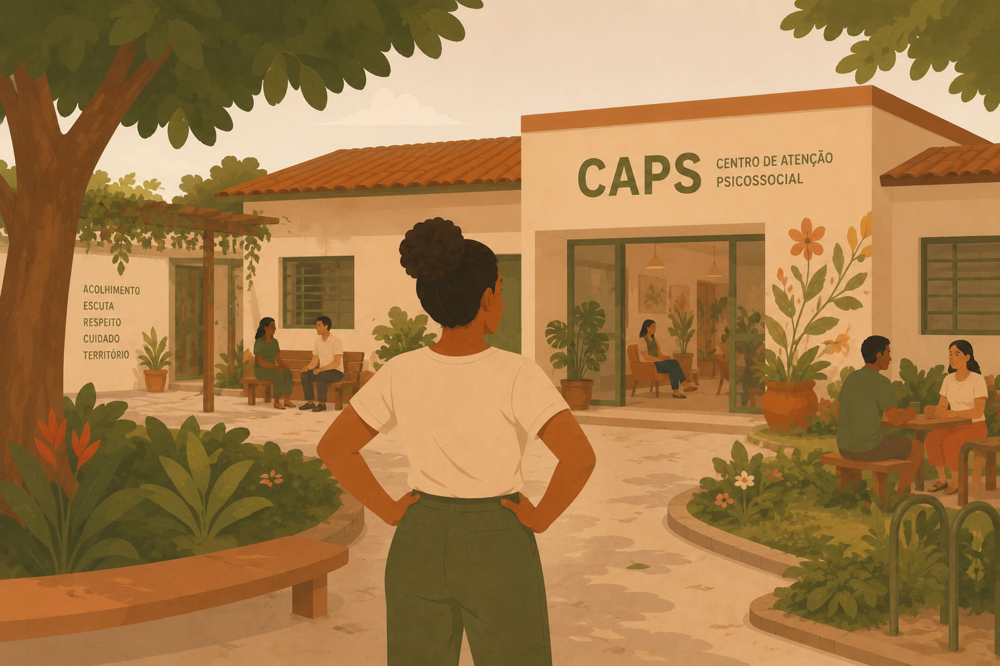
A mudança de cena: do manicômio ao território
Muitas vezes, em crise, Antônia se lembra da morte da mãe, que sofreu por questões psiquiátricas e tratamentos desumanos, tal como Antônia. O sofrimento geracional vivido, e que a família conta com pesar, tem como veia principal a disputa de terras no sul da Bahia. Conflito que já tirou vidas e fez com que boa parte da família do pai e da mãe tivesse que se mudar. Antônia, em sofrimento, viveu também violências geracionais reatualizadas no sistema psiquiátrico pelas práticas coercitivas e discriminatórias aplicadas como tratamento, e o isolamento praticado pelo manicômio. Respostas parecidas a sofrimentos similares. A morte da mãe, vivida por Antônia como culpa do hospital, também não oportunizou a vivência do luto pela família, que mal pôde vê-la antes de ser enterrada em outra cidade, onde ficava o Hospital, e é silenciada pela vergonha do diagnóstico.
A mudança de cena – do manicômio para o território – é uma conquista importante do processo de mudança de paradigma. Em entrevista, Rotelli, diretor de saúde mental de Trieste, diz que “foi isso que mudou em todos estes anos, mudou o setting: do manicômio ao ambulatório, ao centro de saúde mental, à comunidade”, colocando o próprio tecido social como objeto de trabalho. É na comunidade, é na cidade, e no espaço de relações concretas daquela pessoa que “há o maior número de recursos humanos capaz de criar cenários em que o paciente possa encontrar uma brecha para sair de seu fechamento, uma oportunidade” (Sade, 2014, p. 42).
Somos atravessados pelas conexões que nos constituem, sujeitos em rede, sujeitos-rede. E, no território, há uma riqueza imensa de oportunidades e de riscos. No território, vivemos as múltiplas temporalidades, de traumas geracionais perpetuados, mas também da história em toda sua potência, chances de sair do círculo fechado das repetições violentas e traumas que correm como água profunda nos leitos do rio da vida e afetam geração após geração. Para Roberto Beneduce, psiquiatra e antropólogo italiano Etnopsiquiatra italiano, considerado o pai da etnopsiquiatria crítica, trabalha e escreve sobre a questão da migração e do refúgio e outras populações em situação de vulnerabilidade. Ao ser perguntado sobre o termo “etnopsiquiatra”, diz que o nome carrega malefícios, mas, ao mesmo tempo, fica marcado que o conhecimento que produzimos é sempre a partir de uma determinada cultura e que talvez as nossas ferramentas não sejam usadas da mesma maneira em diferentes culturas. O outro é sempre um outro. , estamos sempre lidando com diferentes formas de viver o tempo e a história, entre populações diversas. O delírio poderia ser visto, inclusive, como uma condensação dessa diferente temporalidade, uma condensação de uma história pouco enlutada, que não teve oportunidade de elaboração.
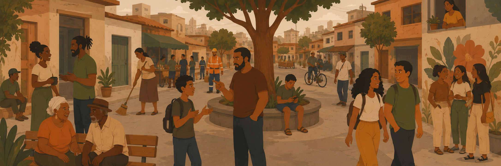
As redes, que são mais do que os equipamentos de saúde, não são estáveis a todo momento, como a própria vida, têm movimento, desvios, atrasos e desentendimentos. Quando a rede que sustenta o viver sofre rupturas intensas, rigidez inoperante ou instabilidade generalizadas, e quando as conexões com ideias, objetos, pessoas, valores e com o mundo se deslocam, algo ocorre. Às vezes por um rompimento súbito, às vezes por um desgaste lento e silencioso.
Samah Jabr, psiquiatra palestina Samah Jabr, psiquiatria palestina, foi chefe do departamento de Saúde Mental dos territórios palestinos e fala sobre trauma, território e genocídio em seu livro “Sumud em tempos de genocídio” (2024). , fala de um trauma contínuo para essas populações. Um trauma que não é o mesmo do transtorno de estresse pós-traumático (TEPT), porque existem pessoas e populações que são submetidas a violências constantemente, e, portanto, não haveria esse tempo posterior ao acontecimento sofrido, há sempre a violência acontecendo. Populações que passam por processos intensos de desumanização – genocídios, violência estatal, racismo sistêmico, expulsão de moradia e terra, e quase negação do acesso à saúde e educação – são vítimas de violência constantemente, e seus efeitos na vida dos usuários são precisos.
Para os povos indígenas, da Palestina, do Brasil ou do Sudão, o território é salvação, é necessidade, e objeto de disputa feroz. Uma disputa que se utiliza da desumanização e da retirada de direitos para realizar atrocidades sem serem responsabilizados. Pensar a relação com o território, a partir da perspectiva dos povos originários, é uma forma de pensar o cuidado para essa população, mas não só, pois é possível e bem-vindo pensar o cuidado de uma maneira geral.
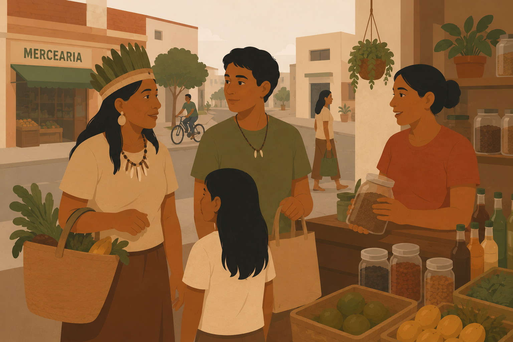
Se o conhecimento da saúde mental é o conhecimento das margens que definem o rio, tomaremos dos povos indígenas a compreensão da conexão com o território para pensar a produção de cuidado imbricada com o ambiente que nos circunda. Ou seja, ao tomarmos aqueles que são historicamente restos, excluídos, conseguimos compreender melhor as dinâmicas sociais de uma maneira mais atenta e apurada, e pensar a relação desses povos com o território pode nos ajudar a pensar a relação do ser humano, em sua variedade, com seu ambiente. Conhecer e trabalhar com o conhecimento indígena é, portanto, pensar novamente a partir da margem.
Compreender a rede de saúde, como fizemos antes, ajuda a entender a resposta à crise que ela oferece. Agora, porém, precisamos olhar para a rede viva e para o que a sustenta: o território. Território não é só “o lugar onde a crise acontece”, mas um coprotagonista do cuidado – com suas violências, recursos, relações, serviços, vizinhanças, ruas, igrejas, coletivos, trabalho, escola e assistência social.
Na crise, esse território pode encolher (a pessoa se fecha, perde circulação, se isola, rompe laços) ou se impor de forma brutal (ameaças, conflitos, expulsões, polícia, fome, desalojamento). A crise é, então, uma espécie de curto-circuito entre pessoa e mundo: o mundo pesa demais, e o corpo responde como pode. Por isso, não é raro haver desorientação no tempo e no espaço e uma queda importante da autonomia, com dificuldade de sustentar necessidades fundamentais – habitar com segurança, trabalhar/gerar renda e participar da vida cultural e comunitária.
Muitas são as perspectivas possíveis para analisar as relações entre corpo e território (Haesbaert, 2021). A que nos interessa para a discussão vem do conhecimento produzido pelas populações dos Campos, Florestas e Águas e implica uma compreensão mais ampla sobre o corpo individual e suas trocas com as delimitações geográficas, como pensadas tradicionalmente. Trata-se de instigar outro modo de concepção das subjetividades e dos territórios onde atuamos, abandonando a oposição entre sujeito e ambiente, seres humanos e não humanos, mundo físico e mundo espiritual, passado e presente, entre outros.
Coradin e Oliveira (2024) nos apresentam algumas características do conceito e suas relações com a saúde de mulheres de povos originários. Dizem:
O território constitui o organismo físico, psicoemocional, mental e espiritual das mulheres, assim como as florestas, a fauna e a flora e as águas são mantidas pelos seus corpos. Ambos, corpo e território, vivem em profunda relação de codependência ecológica. [...] Compreender essa inter-relação nos auxilia a entender as motivações que as mulheres das florestas, dos campos e das águas acionam para construir a sua saúde, desde seus coletivos comunitários e territórios de vida (Coradin; Oliveira, 2024, p. 3).
Certas formas de pensar as subjetividades que se constroem nessas populações estabelecem extensões e continuidades, compreendendo o sujeito implicado com os elementos que compõem o seu território, não sendo possível distinções entre estes. É claro que o sujeito também é seu corpo físico, com suas singularidades e características específicas, mas não se limita a isso. A subjetividade também pode integrar o rio, a mata e o canto dos pássaros. Uma árvore, suas cascas e frutas podem ser compreendidas como antepassados. O chá de ervas é por vezes um professor. Espiritualidades que protegem, acolhem e produzem cuidados em saúde das pessoas.
De modo geral, são subjetividades compostas de elementos do próprio corpo do sujeito, da sua família, da sua cultura, de suas tradições, da sua ancestralidade e relações com o passado e dos elementos físicos e não físicos da natureza. A essa forma de compreender a subjetividade chamamos de corpo-território.
Esse modo de compreender a vida, a saúde e o território nos impõe a construção de novas formas de fazer e pensar saúde. Em primeiro lugar, precisamos lembrar que essas populações não são chamadas de povos originários à toa: existem práticas milenares de cuidados múltiplos, construídas ao longo do tempo nas relações entre si e com o território, diante de contextos e demandas que lhes foram impostos. É preciso reconhecer esses saberes e práticas tradicionais de cuidado nos territórios – suas histórias, seus modos de compreender o processo saúde-doença, e os atores e atrizes que os sustentam. Não há acolhimento e formação de vínculo sem diálogo horizontal com essas práticas.
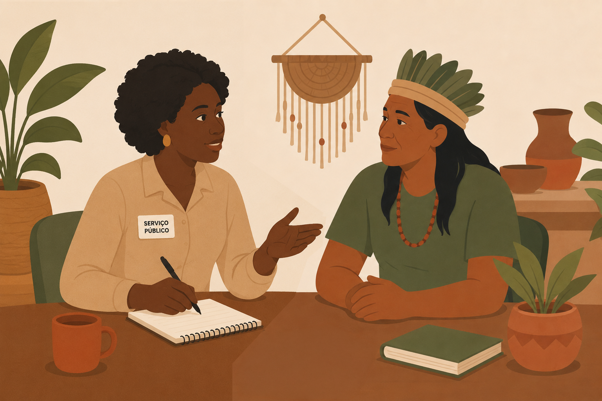
Em segundo lugar, compreender que a noção de corpo-território conflita com as divisões, os recortes e as especializações excessivas das ciências humanas e da saúde, que separaram por décadas o sujeito em várias áreas específicas do conhecimento – imunologia, cardiologia, psiquiatria etc. Isso quer dizer que, em certas populações, não existem diferenças claras entre o que é “mental” ou, mais especificamente, o que se configura como “crise em saúde mental”. Para o cuidado do Nhemyró², por exemplo, é possível que, entre outras práticas, sejam realizados jejuns ou restrições alimentares – práticas diferentes das nossas abordagens em face do suicídio. Cabe a nós o exercício constante de busca por essas compreensões.
Por fim, o corpo-território obriga-nos a pensar que cada violação aos corpos são agressões aos territórios. A vulnerabilidade do corpo produz fragilidades no território. Da mesma forma, o ataque aos territórios, o enfraquecimento da qualidade de vida nestes – como o avanço do garimpo, das queimadas, do desmatamento, da contaminação dos rios, do uso de agrotóxicos e tantos outros – é a produção de vários processos de desterritorializações, de adoecimentos e de mortes. Assim, cuidar da saúde mental também é lutar e defender os territórios. Aqui, os conceitos de crise ambiental e crise em saúde mental precisam se entrelaçar.
É o que nos ensinam as mulheres indígenas por meio do manifesto publicado durante a I Marcha de Mulheres Indígenas, em 2019.
Queremos respeitado o nosso modo diferenciado de ver, de sentir, de ser e de viver o território. Saibam que, para nós, a perda do território é falta de afeto, trazendo tristeza profunda, atingindo nosso espírito. O sentimento da violação do território é como o de uma mãe que perde seu filho. É desperdício de vida. É perda do respeito e da cultura, é uma desonra aos nossos ancestrais, que foram responsáveis pela criação de tudo. É desrespeito aos que morreram pela terra. É a perda do sagrado e do sentido da vida (Marcha das Mulheres Indígenas, 2019, p. 341-342).
Escute o áudio para algumas reflexões sobre o que chamamos de diálogo intercultural. Acesse a transcrição aqui.
Para ampliar nossa discussão sobre a relação entre corpo-território e saúde, veja o vídeo “Amazônia sem Garimpo”, no qual se destacam o avanço do garimpo e os efeitos do uso predatório dos recursos naturais na saúde dos indígenas Yanomami: